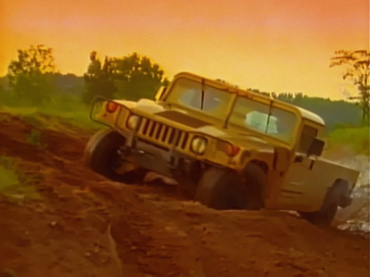
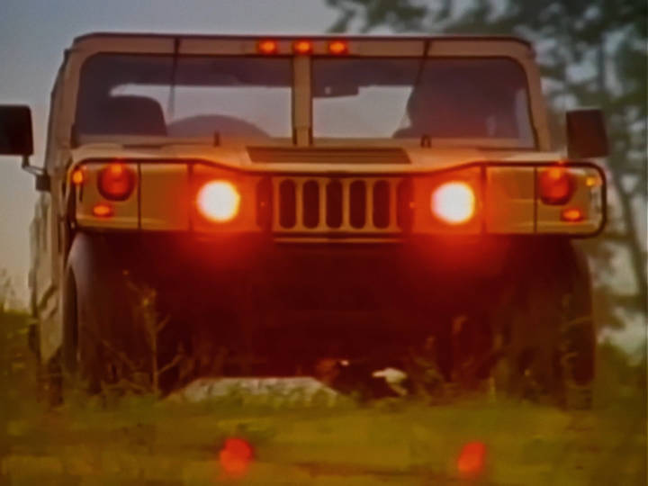
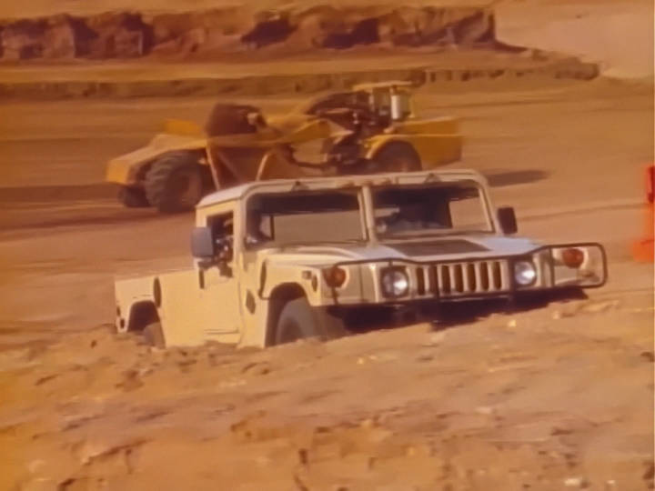
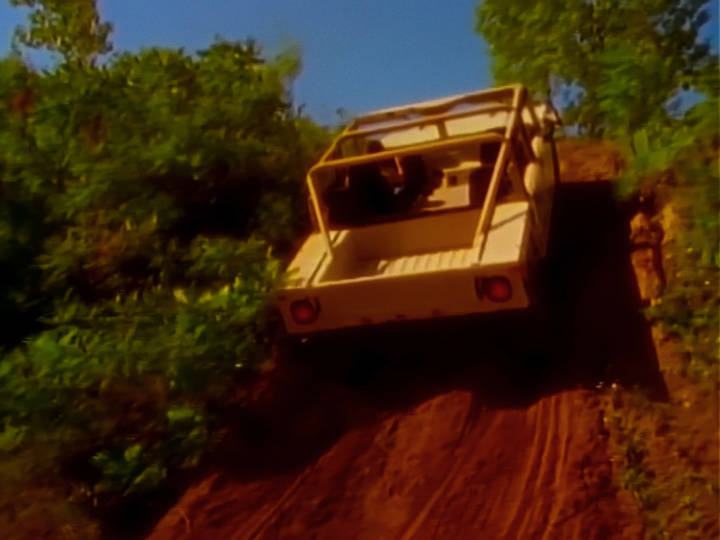
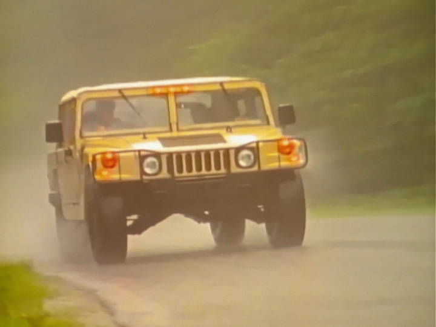
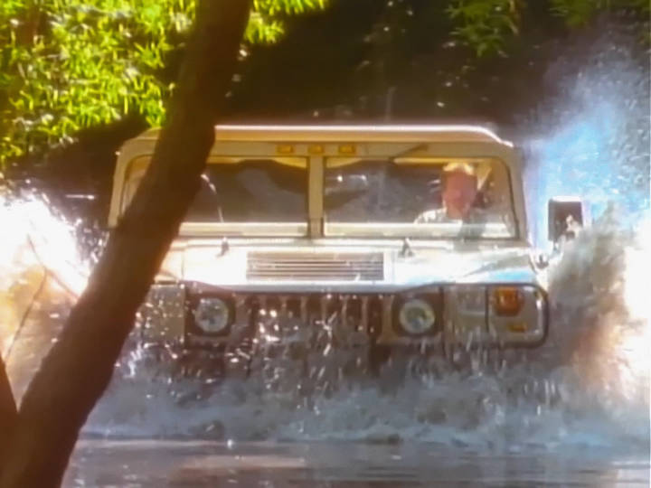
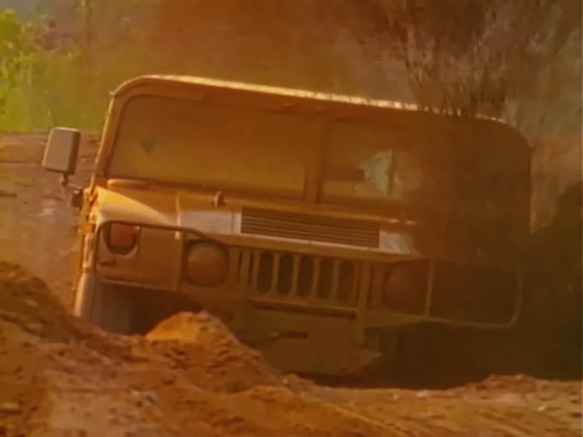
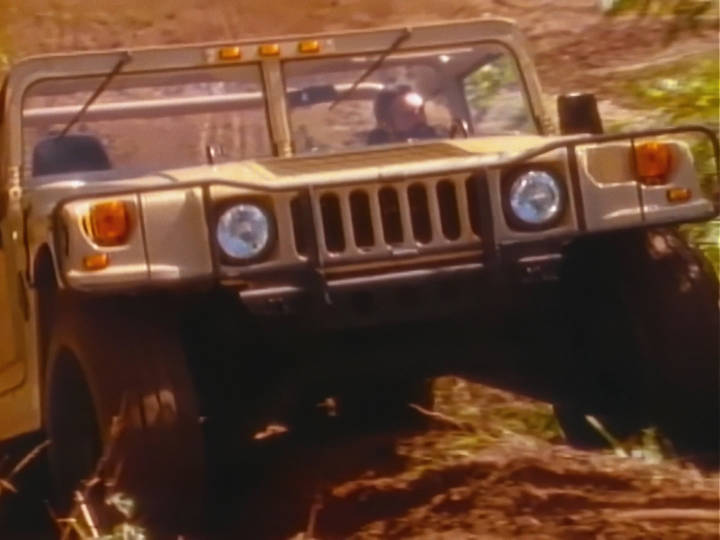

When AM General started selling civilian versions of the military HumVee, these were the first national TV spots for the new pre-GM Hummer. Watch the AM General OCTOBER 1992 - HUMMER LAUNCH VIDEO announcing James Earl Jones as the "Voice of HUMMER"







